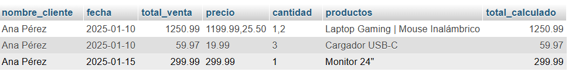
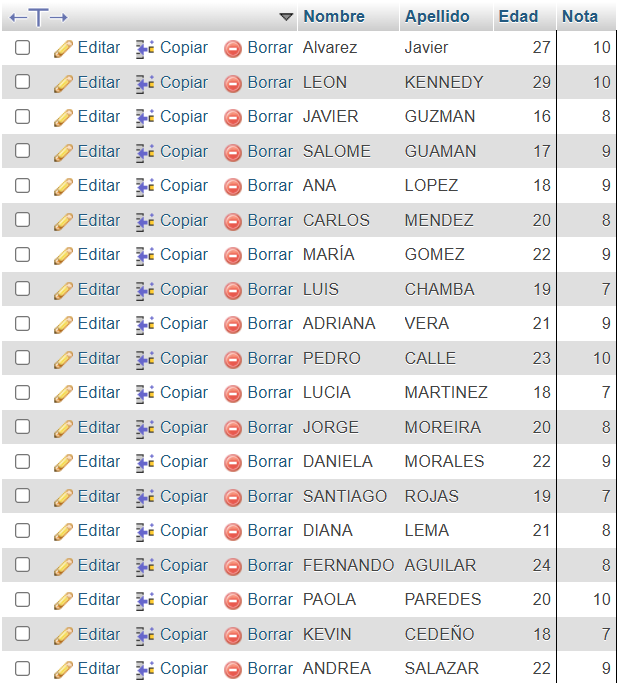
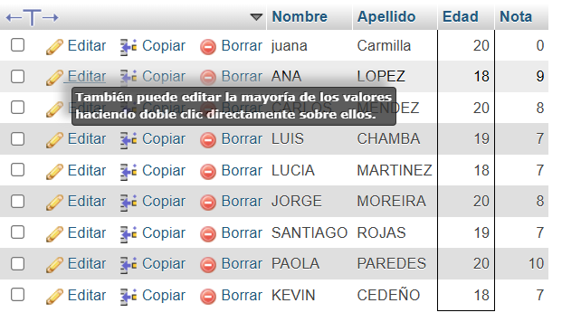

Trabajo de manejo de base de datos
Deber Uno
explicar los conceptos basicos de base de datos relacionales
concepto uno: tablas
definicion: es la estructura principal de una base de datos relacional
componentes:
filas: cada fila representa una entidad individual ejemplo SQL
SQL
INSERT INTO estudiante (Nombre, Apellido, Edad, Nota)
VALUES ("Juan", "Carlos", 28, 7);esto añade un nuevo registro a la tabla estudiante y se visualizaria de la siguiente forma:
concepto dos: claves
clave primaria (o primary key): es el identificador unico de cada tabla
clave foranea (o foreign key): es la seccion de una tabla que conecta con una primary key de otra tabla, generando una relacion entre ambas tablas.
ejemplo SQL y visual: una tabla de empleados que esta relacionada por id empleados con el trabajo de dicho empleado
concepto tres: relaciones.
hay 3 tipos de relaciones en las tablas, estas pueden ser uno a uno, uno a muchos, muchos a uno.
relacion uno a uno: un registro de tabla que se relaciona con un registro de otra.
relacion uno a muchos: un registro de una tabla que se relaciona con varios registros de otras.
relacion muchos a muchos: requiere una tabla de intermediario para conectar multiples registros entre si.
Ejercicio Uno
Consultar los productos comprados por el cliente número 1
Usando el codigo de SQL
SQL
SELECT
c.nombre_cliente,
v.fecha,
v.total_venta,
GROUP_CONCAT(dv.precio_unitario) AS precio,
GROUP_CONCAT(dv.cantidad) AS cantidad,
GROUP_CONCAT(p.nombre_producto SEPARATOR " | ") AS productos,
SUM(dv.precio_unitario * dv.cantidad) AS total_calculado
FROM cliente c
INNER JOIN venta v
ON c.id_cliente = v.cliente_id
INNER JOIN detalleventa dv
ON v.id_venta = dv.venta_id
INNER JOIN producto p
ON dv.producto_id = p.id_producto
WHERE c.id_cliente = 1
GROUP BY dv.venta_id;se visualizara de la siguiente forma:

Ejercicio Dos
Consulta todos los estudiantes cuyo promedio sea mayor a 7.
solucion:
Usando el codigo SQL:
SQL
SELECT Nombre, Apellido, Edad, Nota FROM estudiante WHERE Nota >= 7;se visualizara de la siguiente forma:

Ejercicio Tres
Consulta los estudiantes cuya edad esté entre 18 y 20 años.
Usando el codigo SQL:
SQL
SELECT Nombre, Apellido, Edad, Nota FROM estudiante WHERE Edad >= 18 && Edad <= 20;se visualizara de la siguiente forma:
